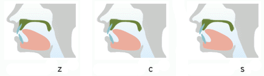
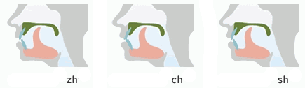
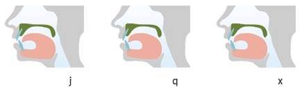

Voiced/Voiceless consonants pairs pronounced as Aspirated/Non Aspirated pairs:
b - р
d - t
g - k
z - с
zh - ch
j - q
z, c, s - tip of the tongue raised to alveoles

zh, ch, sh, r - tip of the tongue raised to palate
zh, ch, sh - voiceless
r - voiced

j, q, x - tip of the tongue pressed to lower teeth, sides of the tongue touch upper teeth
x - hissing sound
